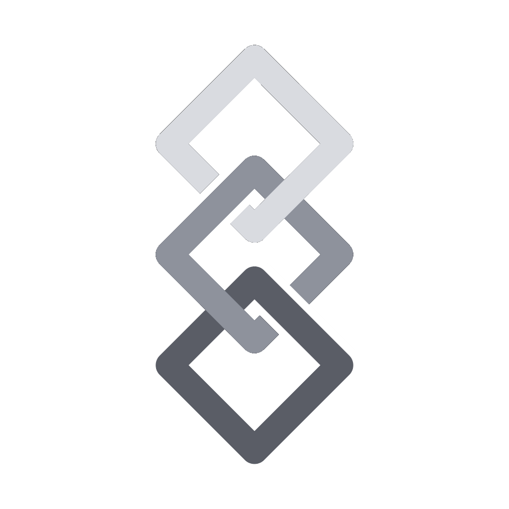
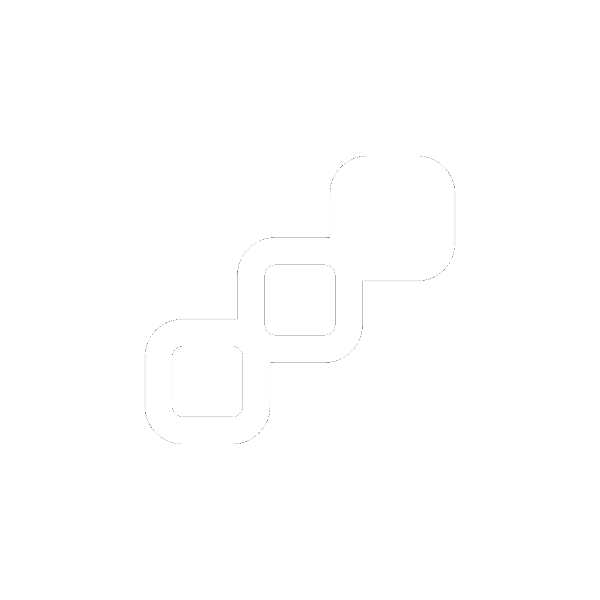
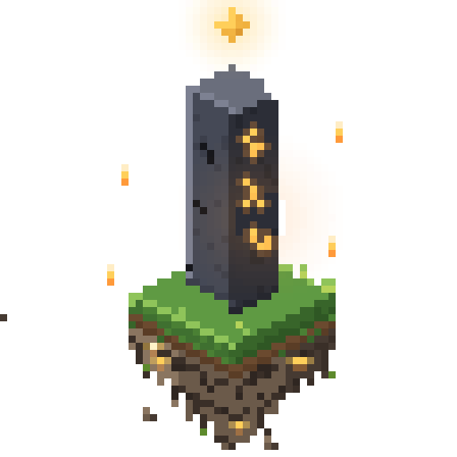

Each one is built around the same idea: actions are checked against rules, and what happened can be proven later.
zlang
Personal project · source private
A language and console for security work with governance built in. Every network command is checked against an approved scope, every action lands in a tamper-evident log, and a lockdown saves a signed evidence file.
AboutTry the demo

manjim
Open source · on PyPI
A GRC and IT audit CLI. It audits a project against checks mapped to ISO 27001:2022 Annex A and SOC 2, builds a risk register with inherent and residual risk and DPDP Act flags, and seals reports so any later change is detected.
RepoPyPI
delbina
Open source · on PyPI
Cuts the token cost of long AI chats and agents. It compresses old context, redacts secrets before they reach a model, and keeps a compaction log of every change. delbina-sum In progress is a small summarizer that keeps exact IDs, paths and versions.
RepoPyPIdelbina-sum

Hasfragis
Team project · core team member
A digital forensics toolkit that makes evidence tamper-evident and checkable: file hashes, a Merkle root, a signed custody ledger and an incident timeline.
Website

BitPillars
Game studio
Tiny pixel games that are fast, chill and satisfying, all free to play in the browser.
Play